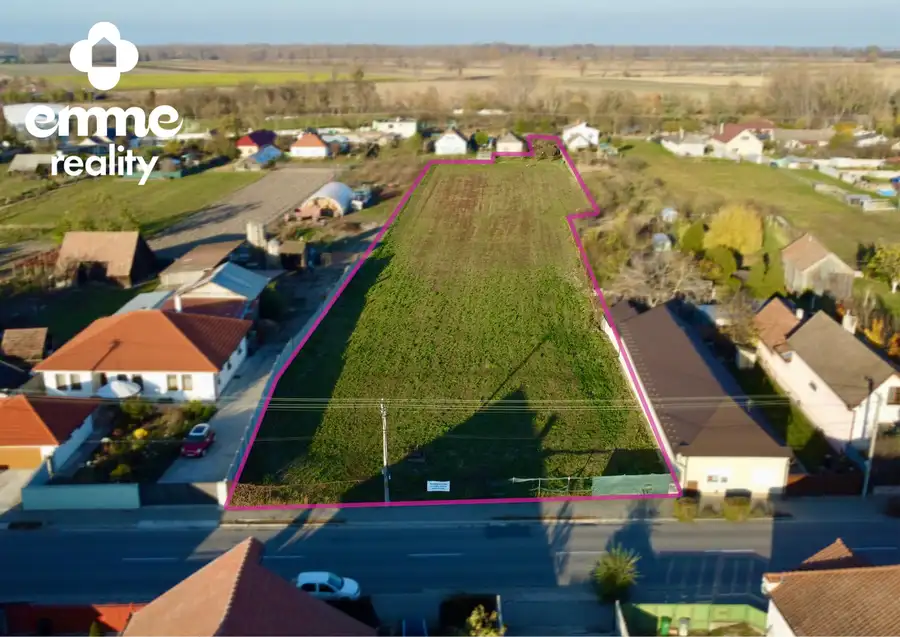
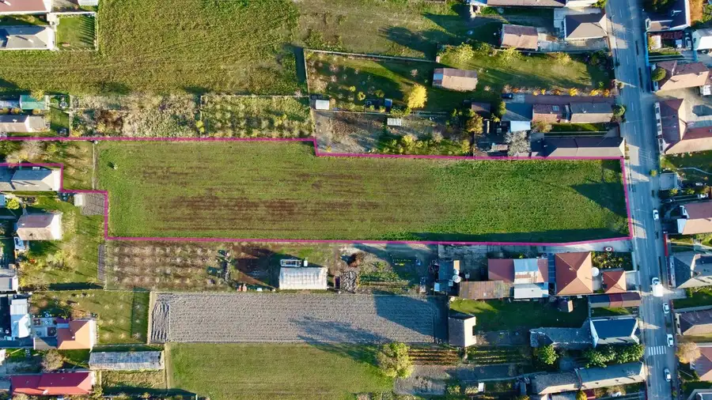

Investičná príležitosť - Stavebný pozemok na predaj v obci Čiližská Radvaň
Čiližská Radvaň


- Plocha7656 m²
O nehnuteľnosti
Výborná lokalita pre pokojné bývanie alebo investíciu!Realitná kancelária emme reality ponúka Vám na predaj priestranný stavebný pozemok s výmerou 7 656 m² v obci Čiližská Radvaň, len približne 20 minút jazdy od Dunajskej Stredy a 15 minút od Győru.Voda je privedená priamo na pozemok. Inžinierske siete sa nachádzajú pri hranici pozemku.Pozemok je rovinatý, prázdny a pripravený na okamžitú výstavbu.Prístup je možný z dvoch ulíc, čo poskytuje viacero možností využitia.Pozemok je ideálny na výstavbu rodinných domov alebo ako investičná príležitosť v tichej a vyhľadávanej lokalite s výbornou dostupnosťou.Cena: 290 900 € Výmera: 7 656 m²V sume je zahrnutá provízia realitnej kancelárie, vzniknuté administratívne poplatky, právny servis advokátskej kancelárie a bezplatné poradenstvo pri financovaní.V prípade záujmu nás neváhajte kontaktovať – radi poskytneme viac informácii alebo dohodneme obhliadku.Kontakt:Kitti Sebestyén0915 983 393sebestyenkitti@emmereality.sk
Parametre
- Druh
- Pozemok pre rodinné domy
- Dátum zverejnenia
- 09. 11. 2025
- Elektrina
- Pri pozemku - 230 V
- Odpadové vody
- Nedostupné
- Plocha pozemku
- 7656 m²
- Plyn
- Pri pozemku
- Pripravenosť k výstavbe
- Schválené v územnom pláne
- Terén pozemku
- Rovinatý
- Typ
- Predaj
- Voda
- Pri pozemku - Verejný vodovod, Na pozemku - Diaľkový vodovod